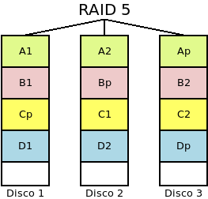

5.4. RAIDs¶
5.4.1. Introducción teórica¶
Un RAID puede definirse como un sistemas de almacenamiento que, mediante técnicas hardware o software, utiliza de manera conjunta varios discos para distribuir los datos entre todos ellos con la finalidad de:
- Introducir redundancia para hacer el sistema tolerante a fallos, de manera que aunque falle algún disco, el sistema pueda seguir accediendo a los datos sin interrupciones
- Aumentar la capacidad de almacenamiento, esto es, constituir una unidad de almacenamiento mayor que cada una de los discos físicos por separado.
- Aumentar el rendimiento en las lecturas y escrituras.
Dependiendo de cuál sea el RAID que se implemente se lograran alcanzar uno o más de estos propósitos; y el resultado de su implementación será la creación de un dispositivo virtual sobre el que el sistema operativo podra crear particiones y sistemas de archivos. A estas finalidades, hay que añadir un concepto relacionado con el de la redundancia: el de fiabilidad, esto es, la probabilidad de que el sistema no pierda datos. Así, pues, al discutir sobre los distintos tipos de RAID indicaremos:
- Cuántos discos deben fallar para el sistema pierda datos.
- Cuál es propabilidad de que el hecho anterior se produzca.
- Cuál es su capacidad de almacemiento.
- Cómo afecta al rendimiento de lectura y escritura.
Tipos de RAIDs
Hay diversos tipos o niveles de RAIDs, para cuyas descripciones llamaremos s a la capacidad del disco físico más pequeño, n al número de discos que lo conforman, y p a la probabilidad de que se rompa un disco en un determinado tiempo (supondremos esta probabilidad la misma para todos los discos):
- RAID 0 (o Volumen dividido)
Se forma con dos o más discos entre los cuales se distribuye equitativamente la información sin incluir información redudante.

Es conveniente, como en el resto de tipos, que los discos sean de la misma capacidad, ya que sólo es aprovechable cada disco hasta la capacidad del más pequeño. En lo referente a los propósitos de RAID:
- El sistema no es tolerante a fallos, puesto que no existe redundancia. En consecuencia, no puede romperse ningún disco. Y es más, cuanto mayor sea el número de discos, menos fiabilidad tendrá el sistema, ya que aumenta la probabilidad de que uno de ellos falle y se desbarate toda la información.
- La probabilidad de que el sistema falle es de \(P^n_{R0} = 1-(1-p)^n\).
- La capacidad del conjunto es \(n*s\).
- Mejora el rendimiento tanto en la lectura como en la escritura, ya que se puede leer y escribir simultáneamente en los discos.
- RAID 1 (o Espejo)
Se forma con dos o más discos de modo que lo que se escribe en uno se replica en todos los demás.

En este caso, el conjunto es altamente redundante tanto más cuantos más discos haya, a costa de sacrificar capacidad:
- El sistema es capaz de soportar la ruptura de \(n-1\) discos sin que se produzca pérdida de información.
- La probabilidad de que el sistema falle es de \(P^n_{R1} = p^n\).
- No aumenta la capacidad del conjunto que seguirá siendo la capacidad individual de uno de los discos, \(s\).
- Aumenta el rendimiento de las lecturas, ya que pueden realizarse lecturas simultáneas, pero no el de escritura.
- RAID 0+1 (o Espejo de divisiones o RAID 01):
Es un sistema híbrido formado con un mínimo de cuatro discos, en los que los n discos se agrupan en grupos de m. Cada grupo de m discos constituye un RAID 0 y con todos los grupos se forma un RAID 1. Si tenemos cuatro discos y los agrupamos de 2 en 2, este será el resultado:

Con esta disposición:
- Hay tolerancia a fallos, ya qye el sistema falla sólo cuando falla al menos un mismo disco de todos los grupos en RAID 0.
- ¿Alguien me calcula la probabilidad de que este sistema falle?
- Aumenta la capacidad hasta \(m * s\).
- Hay mejora en el rendimiento de lecturas y escrituras.
- RAID 1+0 (o Divisiones en espejo o RAID 10):
El sistema es parecido al anterior, pero se invierten los niveles: cada grupo de m discos forma un RAID 1 y con todos los grupos se forma un RAID 0. Como en el caso anterior se requieren al menos cuatro discos:

Esta disposición sopone:
- Gran toleracia a fallos, ya que el sistema falla solamente cuando fallan todos los discos de una misma división.
- La probabilidad de que el sistema falle es de \(P^{n,m}_{R10} = 1-(1-p^m)^\frac{m}{n}\).
- Aumenta la capacidad hasta \(\frac{n}{m}*s\).
- Hay mejora en el rendimiento de las lecturas y las escrituras,
- RAID 5
Es un sistema de al menos tres discos fisicos, de manera que la información se distribuye en todos ellos, excepto en uno en el que se incluye información de paridad, por lo que es posible recuperar la información ante el fallo de uno de los discos. La base del cálculo de la paridad es la operación lógica XOR que se caracteriza porque cuando el número de 1 en los operandos es impar el resultado es 1 y, cuando es par, 0. En consecuencia, suponiendo que los operandos sean bits, obtenemos la siguiente tabla:
O1 O2 O2 O1⊕O2⊕O3 0 0 0 0 0 0 1 1 0 1 0 1 0 1 1 0 1 0 0 1 1 0 1 0 1 1 0 0 1 1 1 1 en la que podremos darnos cuenta, que tapemos la columna que tapemos, podemos deducir sus valores aplicando la operación XOR a los valores de las columnas aún visibles. En un RAID 5 el cálculo de la paridad es más complejo, ya que tal cálculo se hace a nivel de bloques y el bloque de paridad se distribuye equitativamente entre todos los discos físicos.
En este tipo:
- Es tolerante a fallos en la medida, en que la paridad permite que se pueda estropear un único disco.
- La probabilidad de que el sistema falle es la probabilidad de que falle un RAID 0 menos la probabilidad de que sólo se rompa un disco, ya que en este caso el RAID 0 sí falla, pero el RAID 5, no. Por tanto: \(P^n_{R5} = P^n_{R0} - n*p*(1-p)^{n-1}\).
- Aumenta la capacidad, ya que la paridad sólo ocupa el equivalente a un disco físico. Por tanto, obtendremos una capacidad de \((n-1)*s\).
- Hay mejora en el rendimiento de las lecturas, pero hay una penalización en las escrituras, ya que una escritura implica leer datos del resto de discos para generar la paridad y escribir ésta. Esta bajada en el rendimiento en la escrituras es su principal defecto.
Variantes de este nivel son:
- El RAID 4 en que la información de paridad se almacena siempre en el mismo disco.
- El RAID 3 en que ocurre lo mismo, pero además, los datos se dividen en bytes y no en bloques.
- El RAID Z, que es implementado por el sistema de fichero ZFS y es semejante al RAID 5, pero que añade variantes para mejorar el rendimiento en las escrituras.
- RAID 6
Es parecido a un RAID 5, pero genera dos bloques de paridad y no uso sólo. Por tanto, el número mínimo de discos para constituirlo es 4. En él, se sacrifica la capacidad por el aumento de fiabilidad, ya que pueden fallar hasta dos discos:
- Tolera que fallen hasta dos discos.
- La probabilidad de que el sistema falle es la probabilidad de que falle un RAID 5 menos la probabilidad de que fallen dos discos, ya que en este caso un RAID 5 falla, pero un RAID 6, no. Por tanto: \(P^n_{R6} = P^n_{R5} - n*(n-1)*p^2*(1-p)^{n-2}\).
- Aumenta la capacidad, hasta \((n-2)*s\).
- Presenta los mismos incovenientes de rendimiento que su primo hermano el RAID5: no mejora las operaciones de lectura y penaliza las de escritura.
Particularidades
Sea cuál sea la implementación y el nivel del RAID, hay una serie de particularidades que comparten todos los sistemas RAID:
- Al constituirlos es necesario que se creen una serie de estructuras de metadatos a semejanza de lo que ocurre con los sistemas de ficheros.
- Habilitan algún mecanismo para advertir al administrador de la rotura de disco, a fin de que este sea diligente en su sustitución. Estos mecanismos pueden ser muy variados (pitidos, leds), pero suelen incluir el envío de un correo electrónico de aviso.
- Al reemplazarse un dispositivo defectuoso por uno nuevo, se desencadena un proceso de recuperación para volver a la situación previa a la rotura.
- Para minimizar el tiempo de sustitución de un disco defectuoso, algunos sistemas incorporan un dispositivo de reserva (hot spare) que se encuentra conectado pero inactivo, por lo que no forma parte efectiva del RAID. En el momento en que se detecta una avería, el disco de reserva se incorpora al RAID y comienza inmediatamente el proceso de recuperación. La labor del administrador consistirá en añadir al sistema un nuevo disco de reserva.
Técnicas de implementación
Hay tres estrategias para la implementación de un sistema RAID:
- Mediante controladora hardware
Por lo general, a una tarjeta de expansión que hace las veces de controladora de disco se le conectan los discos físicos que consituirán el RAID. En este caso, la configuración se establece mediante un firmware particular de la propia controladora y se carga con anterioridad al arranque del sistema operativo, por lo que para el sistema operativo sólo tiene conocimiento de la existencia del dispositivo virtualizado.
Es la solución más costosa, pero la más eficiente al dedicarse a ella hardware específico.
- Mediante firmware
También denominado RAID híbrido o fakeRAID, que es una solución barata en la que no hay ninguna controladora específica dedicada a la constitución del RAID, sino que el chip de la controladora de disco incluye firmware específico para la definición del RAID. Como en el caso anterior, la configuración del RAID se hace con anterioridad a la carga del sistema operativo, por la que éste sólo detecta el dispositivo virtual.
Aunque aparentemente es una solución similiar, al no existir hardware expecífico dedicado, su rendimiento es peor y, por lo general, es conveniente una solución software pura.
- Mediante software
esto es, mediante aplicaciones que provee el propio sistema operativo o porque sea una característica que soporta el sistema de ficheros. En este caso, el sistema operativo verá tanto los dispositivos físicos como el dispositivo virtual resultado de haber constituido el RAID.
Los sistemas operativos comunes traen herramientas para la creación de RAIDs:
- MasOs, FreeBSD, NetBSD o OpenBSD cada uno con sus respectivas herramientas.
- Windows gracias a Logical Disk Manager y en las versiones modernas de servidor a Sorage Spaces.
- Linux mediante su herramienta md, que será a la que dediquemos el resto del epígrafe.
Por su parte, algunos sistemas de ficheros soportan directamente la constitución de dispositivos RAID como ZFS o BtrFS.
Es importante tener presente que la constitución de un RAID exige el almacenamiento de los metadatos que lo definen. En los tres casos, esos metadatos se almacenan en los propios dispositivos de almacenamiento[1]. Es conveniente, tener presente esto, sobre todo cuando sustuimos el hardware en los dos primeros casos:
Si nuestra intención es ser capaz de leer datos, entonces necesitaremos que el sistema sea capaz de entender tales metadatos:
- En el caso de los RAID por hardware, el núcleo de linux dispone de algunos drivers (véase esta página de la wiki de debian al respecto).
- En el caso de los fakeRAID, puede sacarnos del apuro dmraid(8).
Si nuestra intención es reaprovechar los discos sin preocuparnos por la información, entonces deberemos asegurarnos de eliminar los metadatos. Para ello, suele ser suficiente con sobrescrbir con ceros los primeros y los últimos 512KiB:
# dd < /dev/zero > /dev/sdX bs=512 count=1024 # dd < /dev/zero > /dev/sdX bs=512 seek=$((`blockdev --getsz /dev/sdX` - 1024)) count=1024
5.4.2. RAIDs en Linux¶
Ilustraremos la creación y manipulación de RAID implementando un RAID 1, porque no entraña excesiva dificultad crear RAIDs de otros niveles. Es obvio que para ello necesitaremos los discos físicos que constituyen el RAID. Para evitarlos usaremos ficheros que emulen estos discos físicos:
# truncate -s 500M disco1.raw
# losetup /dev/loop0 disco1.raw
# truncate -s 500M disco2.raw
# losetup /dev/loop1 disco1.raw
De modo que nuestros dispositivos físicos serán /dev/loop0 y
/dev/loop1 en vez de sda, sdb, etc.
Advertencia
Tenga presente que está manipulando directamente dispositivos de
disco, por lo que si confunde las unidades y realiza la operación sobre el
disco que contiene su sistema operativo, lo perderá todo. La guía utiliza
/dev/loop0 y /dev/loop1 entre otras cosas para evitar que un
corta y pega irreflexivo, provoque una catástrofe en su sistema.
5.4.2.1. Implementaciones¶
El núcleo de linux dispone de un driver llamado MD para el soporte de volúmenes RAID. Y, de hecho, como herramienta de bajo nivel existe dmsetup(8). Sin embargo, es mejor usar herramientas de usuario más sencillas para la creación y gestión de estos dispositivos, para lo cual tenemos fundamentalmente dos posibilidades:
- mdadm, que es una herramienta exclusiva para la gestión de estos dispositivos y que nos permite un control más preciso sobre nuestra configuración.
- lvm que, desde su versión 2, permite la definición de volúmenes lógicos que sean a su vez dispositivos RAID, para lo cual el grupo de volúmenes deberá haberse construido sobre dos o mas volúmenes físicos, obviamente.
Estudiaremos ambas posibilidades.
Notas al pie
| [1] | Incluso en los RAID por hardware y los fakeRAID en los que habría cabido la posibilidad de que esos metadatos se hubieran registrado en memoria NVRAM la contraladora controladora o de la placa base. |